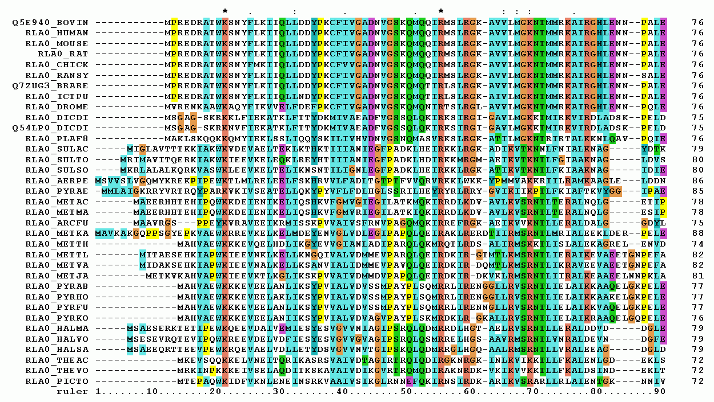

Manual and automatic collation
- Manual collation
- Concepts
- History
- Practices
- Automatic collation
- Concepts
- History
- Practices
- Pro and cons of automatic collation
1. Manual collation
Concepts
(literally "placing side by side"),
in order to spot their differences
Terminology
compare the readings of two or more witnesses of a work, in order to spot the textual variants between themA reading is how a portion of the work is recorded in one witness. For example, considering the first verse of a poem,
- the reading of witness 1 (W1) is the sun is high
- the reading of witness 2 (W2) is the star is high
- the reading of witness 3 (W3) is the sun is high
A textual variation occurs when the witnesses have different readings. In the example above,
- there is textual variation between W1 and W2 and between W2 and W3
- there is no textual variation between W1 and W3.
Examples. How many witnesses?
- Julius Caesar's De bello gallico. 255 (manuscripts)
- Dante's Commedia. 600 (manuscripts and early prints)
- Samuel Beckett's Stirring Still. 40 (copybooks, holograph manuscripts, typescripts, carbon copies)
Collate ... why?
- establish a critical text, as for a critical edition
- track the writing process, as for a genetic edition
- study the textual transmission, for purposes other than the edition
1. Manual collation
History

Library of Alexandria
Public Domain, Link
{kind=link}

Antonio da Fabriano II, Saint Jerome
Public Domain, Link
ex multarum rationum collegio veritas facilius elucescat
from the gathering of many proofs the truth comes to light more easily
Nicolò Maniacutia, Libellus de corruptione et correptione Psalmorum
et aliarum quarundam scripturarum
Bibliothèque interuniversitaire Montpellier, ms 294 f 144r. Link

recensere sine interpretatione et debemus et possemus
Karl Lachmann
Public Domain, Link
Timpanaro, Sebastiano. La genesi del metodo di Lachmann.
Historical-critical edition of the works of Friedrich Hölderlin, edited by D.E. Sattler (Historisch Kritische Gesammtausgabe Hoelderlin)

Raymond Brulez, ms of Sheherazade (1932)
Reproduced only for didactic purposes
copy-text |
bedierisme |
neo-lachmannian school |
genetic criticism |
filologia d'autore |
new bibliography |
Historisch-kritische Ausgabe |
& more ...
centuries of collation
automatic
machine assisted
computer-supported
semi-automatic
COLLATION

Hinman Collator
See in action!
link and licence on the image
R. Marichal, Préface a La critique des textes et son automatisation
Froger, Dom Jacques. La critique des textes et son automatisation. Dunod, 1968.
Voir article Froger 1965.


Collate

Colwell, E. and Tune, E. 1964. "Variant readings:classifcation and use". Journal of Biblical Literature, 83 (3), 253–261.
Schmidt, D. and Colomb, R., 2009. "A data structure for representing multi-version texts online". International Journal of Human-Computer Studies, 67.6, 497-514.
Schmidt, D., 2009. "Merging Multi-Version Texts: a Generic Solution to the Overlap Problem". In Proceedings of Balisage: The Markup Conference 2009. Balisage Series on Markup Technologies, vol. 3 (2009).
Questions?
from the gathering of many proofs the truth comes to light more easily
Nicolò Maniacutia, Libellus de corruptione et correptione Psalmorum
et aliarum quarundam scripturarum
Bibliothèque interuniversitaire Montpellier, ms 294 f 144r. Link

Leonardo da Vinci, Vitruvian man
Public domain. Link
Pablo de Santa Maria, Scrutinium Scripturarum
London, Senate House Library, Incunabula 64

recensere sine interpretatione et debemus et possemus
Karl Lachmann
Public Domain, Link
Timpanaro, Sebastiano. La genesi del metodo di Lachmann.
Historical-critical edition of the works of Friedrich Hölderlin, edited by D.E. Sattler (Historisch Kritische Gesammtausgabe Hoelderlin)
Raymond Brulez, ms of Sheherazade (1932)
Reproduced only for didactic purposes
centuries of collation
"Western editorial theory and collation", Code and Collation: Training Textual Scholars, 2016 [link]
1. Manual collation
Practices
How manual collation works
- choose a base witness or a modern edition as base text
- compare one by one the other witnesses to the base text (silent or aloud)
- register important variants
tiring, error-prone, difficult to record all data
"[Collation is], for most collators, stupendously and nauseatingly dull" (Petty and Gibson 1970)
"The one universal effect of this kind of work is the inducement to sleep" (Shillingsburg 1978)
2. Automatic collation
Concepts
machine assisted
computer-supported
semi-automatic
COLLATION
2. Automatic collation
History
Nury, E. & Spadini, E. 2020. "From giant despair to a new heaven: the early years of automatic collation". Information Technology, 62 (2), 61-74.

Hinman Collator
See in action!
link and licence on the image
Pour les collations l'emploi d'un ordinateur est dans la plupart de cas irréalisable.
R. Marichal, Préface a La critique des textes et son automatisation
La collation des manuscrits est une opération qui relève en quelque sorte de la comptabilité: la machine peut fort bien l'exécuter.
Froger, Dom Jacques. La critique des textes et son automatisation. Dunod, 1968.
Voir article Froger 1965.
Collate
Robinson, P. M. W. 1989. “The Collation and Textual Criticism of Icelandic
Manuscripts (1): Collation.” Literary and Linguistic Computing 4 (2): 99–105.
Manuscripts (1): Collation.” Literary and Linguistic Computing 4 (2): 99–105.
Robinson, P. M. W. 1989. “Rationale and Implementation of the Collation System.” The Miller’s Tale on CD-ROM. The Canterbury Tales Projected. by Peter Robinson, Leicester 2004.
Robinson, Scholarly Digital Editions: The history of Collate, http://scholarlydigitaleditions.blogspot.com/2014/09/the-history-of-collate.html
Towards parallel segmentation
Chaucher, Miller's tale, v. 35
- This Carpenter hadde wedded newe a wyf
- This Carpenter hadde wedded a newe wyf
- This Carpenter hadde newe wedded a wyf
- This Carpenter hadde wedded newly a wyf
- This Carpenter hadde E wedded newe a wyf
- This Carpenter hadde newli wedded a wyf
- This Carpenter hadde wedded a wyf
Results of Collate (first version)
- wedded] 53 witnesses; E wedded 1 witness
- wedded newe] newe wedded 1 witness, newli wedded 1 witness
- newe] 26 witnesses; newly 1 witness; om. 1 witness
- newe a] a newe 23 witnesses
- a] 30 witnesses
Results of Collate (second version)
wedded newe a] wedded newe a 25 witnesses; wedded a newe 23 witnesses; newe wedded a 1 witness; E wedded newe a 1 witness; wedded newly a 2 witnesses; newli wedded a 1 witness; wedded a 1 witness
Colwell, E. and Tune, E. 1964. "Variant readings:classifcation and use". Journal of Biblical Literature, 83 (3), 253–261.
Schmidt, D. and Colomb, R., 2009. "A data structure for representing multi-version texts online". International Journal of Human-Computer Studies, 67.6, 497-514.
Schmidt, D., 2009. "Merging Multi-Version Texts: a Generic Solution to the Overlap Problem". In Proceedings of Balisage: The Markup Conference 2009. Balisage Series on Markup Technologies, vol. 3 (2009).
2. Automatic collation
Practices
Humanists and Developers
"one of the most trying difficulties of our first attempt had been the uncertainty of our communication with the programmers. Mr. Petty proposed that a second effort be made in which he would be the programmer. We would thus be certain that decisions taken by us as textual scholars would not be circumvented when they were translated into machine code" Petty and Gibson 1970
"Before I learned Fortran a student introduced me to a professional programmer in the aircraft industry, Ronald Bland [...]. He did the programming in his spare time over a couple of months and charged it to experience." Dearing 1970
Humans and Machines
"a close fexible relationship between the editor and the computer where the frst does what he is good at (perceiving and evaluating the signifcance of complex differences and making judgments), the second does what it was designed for (speedy manipulation of large quantifes of data, retention and accurate copying of data sets, creation and updating of extensive records) and the functions of each complement the other" Cannon and Oakman 1989
"in performing these mechanical tasks, the computer never slips up nor grows weary" Stringer and Vilberg 1987
"the unconscious fear of the supposed ties of formalism", Maretti and Zarri 1967
3. Pro and cons of automatic collation
Pros
- Consistency in the comparison (cf. e.g. "define the concept of collation in data processing terms", Petty and Gibson 1970
- Share and reuse the data and results (cf. e.g. data-driven philology, Camps 2018)
- Replicability with new settings (e.g., add new manuscripts to the collation or change the normalization strategy)
Cons
- Need for transcribed materials